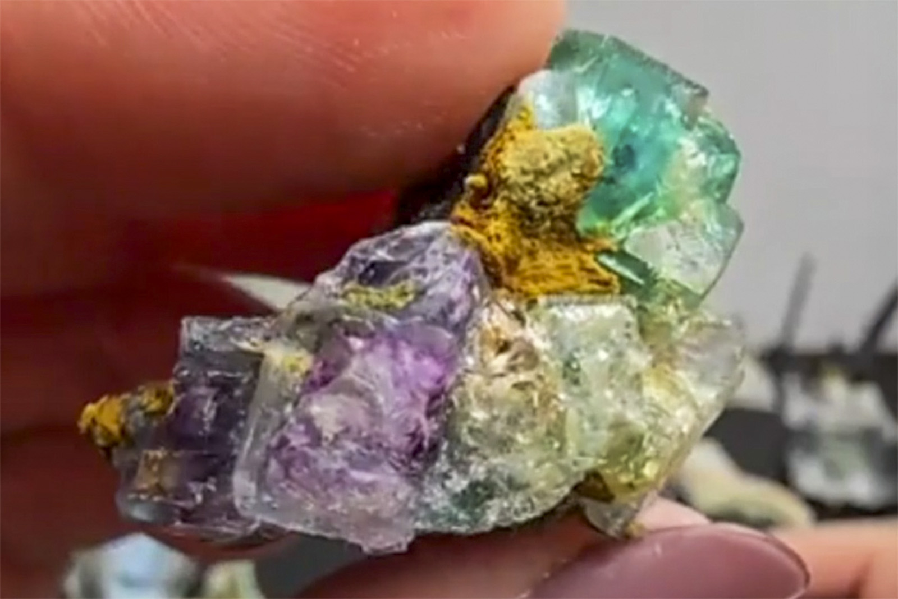

Fluorite with Minor Foitite
"Blue, Green and Purple Fluorite with Foitite"
III-09872
Erongo Mountains, Karibib Constituency, Erongo Region, Namibia
Purchased 3/22/2026 from CAM Minerals for $15.00
Inventory • In Collection
Details
Storage Type: Flat
Storage Location: 000 None
Size class: Miniature (0)
Dimensions: 3.4 × 2.7 × 1.9 cm
Mass: 14.23 g
Luster: Poor, Vitreous